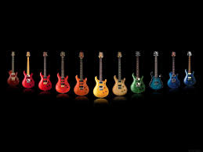

Ukulele
The ukulele is a portable instrument with a small guitar-like body. It consists of a short neck, a main body, four strings and tuning keys, a bridge, a fretboard, and a sound hole. There are a variety of different types of ukuleles including the soprano, concert, tenor, and baritone.